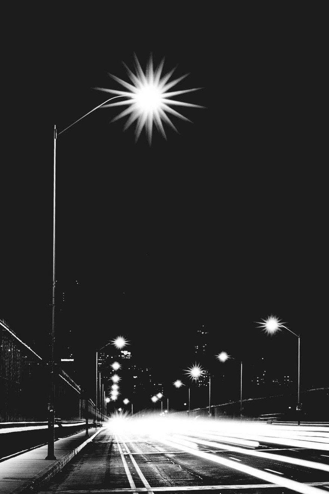
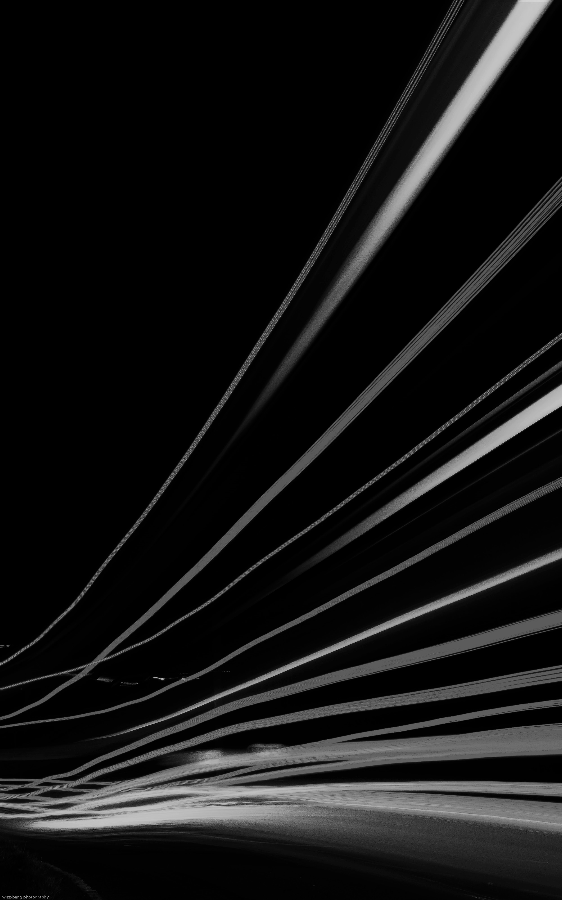

Descubramos el cielo de Buenos Aires
Supernovas - Supernovas - Supernovas - Supernovas - Secretos celestes - Secretos celestes - Secretos celestes - Secretos celestes


Rayos Cósmicos - Rayos Cósmicos - Rayos Cósmicos - Rayos Cósmicos - Velocidad - Velocidad - Velocidad - Velocidad - Velocidad
